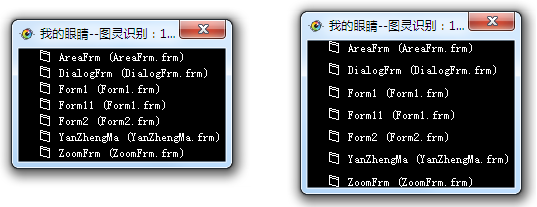

| 命令名称 | Filter_FenceAdjust 栅栏调整 |
| 命令功能 | (针对黑白图像处理)栅栏调整滤镜 |
| 语法格式 | TURING.Filter_FenceAdjust(Direction, Num, Interval) |
| 参数说明 |
Direction：整数型，选择横列分栏时的方向 Num：整数型，间隙穿透白色干扰点数 Interval：整数型，重新摆放后的间隙距离 |
| 返回值 | 无 |
| 按键精灵 |
复制代码
'获取图片图像数据
Call Plugin.TURING.Pixel_FromPicture("C:\栅栏1.bmp")
'显示图像预览
Call Plugin.TURING.Pixel_Preview()
'栅栏布局摆放滤镜
Call Plugin.TURING.Filter_FenceAdjust()
'显示图像预览
Call Plugin.TURING.Pixel_Preview()
|
| 滤镜效果 |  |